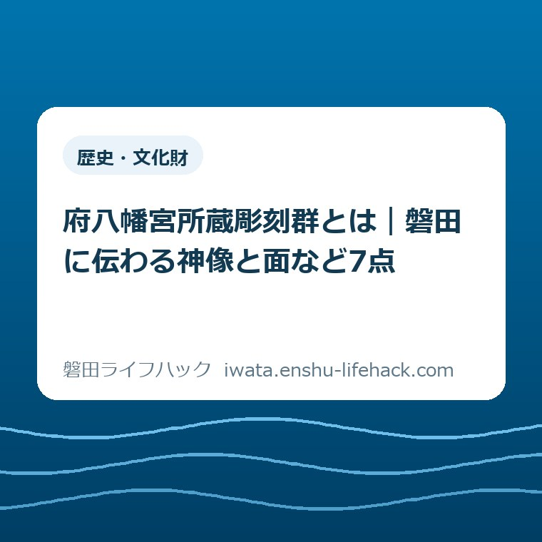

歴史・文化財
府八幡宮所蔵彫刻群とは｜磐田に伝わる神像と面など7点

この記事の要点
Q. 府八幡宮の彫刻って、どんなものがあるの？
A. 府八幡宮所蔵彫刻群は、磐田市中泉の府八幡宮に伝わる神像4体、王の舞面1面、狛犬1体、獅子頭1面の総称です。市は2022年1月28日に7点をまとめて指定しました。王の舞面は桐で作られた縦22センチ、幅17センチの面です。
中泉の神社に伝わる七点を、四つの名前で読む
子どもに「府八幡宮には何があるの」と聞かれて、市の一覧を開く。そこにある「府八幡宮所蔵彫刻群」という長い名前を声に出しても、どんな顔をしたものかは浮かんできません。一緒に調べる人は、神社名を探し、長い画面を送り、子どもが待っていられる長さに説明し直しています。まず、その手間がかかるところから始めましょう。
「所蔵」は、だれが持っているかを示す言葉です。「群」は、いくつもの品をひとまとまりとして扱うときの名前です。磐田市が登録した名称の中で、府八幡宮は持ち主にあたり、彫刻群はそこに伝わる作品のまとまりにあたります。中泉という地名は、この文化財がどこのものかを確かめる手がかりになります。
市が示す内訳の最初は神像です。神の姿をかたどった像が四体あります。そこへ舞の面が一面、狛犬が一体、獅子頭が一面加わります。名称を四つ読んで指を四本折っても、品物の数とは合いません。最初の「神像」のところだけ、指を四本使うと七点を数えられます。
「彫刻」という言葉から、大きな台の上に人の像が七体並んだ景色を思い描く子もいるでしょう。七点の中には、人が舞うときの顔を思わせる面も、上下の顎が別々になった獅子頭もあります。人や動物の姿を物にした仕事を、どこを彫ったか、どんな形で残ったかという目で見ると、ひとつの言葉が急ににぎやかになります。

王の舞面はどれ？ 市の写真では縦22センチの一面
七点のうち一作だけを見るなら、『いわた文化財だより』第203号の3ページを開いてください。「王の舞面」の小見出しに、面の写真、材質、寸法が一緒に載っています。写真の下にある縦22センチ、幅17センチという数字が目印です。頁の冒頭には楼門の写真もあるので、小見出しまで目を移すと見つかります。
材料は桐です。市の説明では、室町時代から安土桃山時代にかけての伎楽または舞楽の面と考えられています。「舞」という一字はここで役に立ちます。これをだれかの肖像だと決めて見るのと、舞のときに顔になるものとして眺めるのとでは、同じ写真でも目の穴や輪郭に向ける関心が違ってきます。
面を正面から写した写真には、手のひらも物差しも写っていなくても、下に寸法が添えられています。ノートの上で縦に22センチ、横に17センチを指で示すと、どのくらいの面か見当がつきます。二つの長さの差は5センチ。輪郭そのものをそっくり描けなくても、縦に長い枠に収まることが伝わります。
学校で使うA4の紙は短い辺が21センチ、長い辺が29.7センチです。紙を縦に置けば、その内側に面の縦横が収まります。四隅まで木が詰まった板を想像する必要はありません。寸法が教えてくれるのは、面がいちばん長いところと広いところでどれだけあるか。写真はその枠の中に顔の形がどう収まるかを見せてくれます。

舞の由来を子どもに話すとき、一呼吸置きたい言葉があります。市の解説は、どの芸能に用いたかについて二つの可能性を示しています。調べた人が残したその幅まで伝えるなら、「桐の面で、昔の舞に使ったものと考えられている」と言えます。決まった曲名を付けたり、中泉のどこでだれが舞ったかを補ったりする必要はありません。
四体の神像は、写真の下の寸法と一緒に
同じ3ページには神像四体の写真があります。高さは写真の左から24.5センチ、24センチ、30.5センチ、30センチ。物差しを横に一本置いてみると、大きいほうの二体の高さを思い描けます。写真を拡大すれば細部は大きく見えますが、実物がどれくらいの空間を占めるかは、こうした小さな数字が教えてくれます。
四体は同じ寸法にそろっているわけではありません。いちばん背の高い像と低い像との差は6.5センチです。親子で紙面を見るなら「左から三つ目は、隣より何センチ高い？」という問いも作れます。答えを当てる競争にするより、どの数字がどの写真を指すか、一人が指さし、もう一人が説明を読むほうが作品に目を向けられます。
神像の木は檜です。ここで面の説明に戻ってみると、同じ府八幡宮に伝わった木の彫刻でも、使った木の名が違うことに気づきます。面には桐、四体の神像には檜。写真の色から木を言い当てるのは難しくても、作品の名と材料をひと組にすると、紙面を行き来する楽しみが生まれます。
市は四体を平安時代末から鎌倉時代初期の作とみています。その手がかりとして読みたいのは、すでに指定されていた女神像との関係です。文化財だよりは、材質に違いがあっても製作技法が似ていると説明します。何の木かを調べることと、作り手がどう形にしたかを調べることは、違う問いなのですね。
展示案内で「女神像」と「府八幡宮所蔵彫刻群」という二つの名前に出会ったら、この記述を思い出してください。市は女神像を別に掲げています。女神像の文字を見つけるたびに七点に一体を足してしまうと、市が指定したまとまりが変わってしまいます。関係の深いものを見比べることと、同じ指定の中に数えることは分けておけます。
高さ40センチの二作、口もとに着目する
獅子頭の写真には幅32センチ、高さ40センチという数字が添えられています。面で覚えた縦22センチと比べると、こちらは18センチ高い。その大きさを思い浮かべたら、次は口もとを見てください。市が取り上げているのは、上顎と下顎が上下二つに分かれる造りです。顔の表情から一歩進んで、仕組みの話ができます。
ここには数え方の面白さもあります。上下に分かれると知った子が「二つあるの？」と聞いたら、よく見ています。作りを説明するときは上と下の二つに目を向け、市の指定を数えるときは獅子頭一面と数えます。部品をいくつに分けられるかと、作品がいくつ伝わったかで、数字の意味が変わる例です。
狛犬も高さ40センチです。境内で左右に並んだ狛犬を思い浮かべると、つい二体一組の絵を描きたくなります。府八幡宮のこの指定に数える狛犬は一体。文化財だよりには、もとは一対だったと考えられる旨が記されています。もう一体がどんな姿だったか、いつどこへ移ったかまでは、そこから読み取れません。
獅子頭と狛犬の年代は、どちらも鎌倉時代から南北朝時代と紹介されています。高さが等しく、年代の説明も重なる二作を並べて考えると、違いに目が向きます。一方の説明には顎の造り、もう一方には対であった可能性が書かれている。短い解説でも、作品ごとに次に見てほしいところをちゃんと変えているのです。
2022年の指定日と、作品が生まれた時代
磐田市の「市指定文化財」には、種別、指定年月日、年代、所在地、所有者、内容という欄があります。府八幡宮所蔵彫刻群の指定年月日は令和4年1月28日、西暦で2022年1月28日です。この日付を年表に書くなら、「市が文化財として指定した日」と添えましょう。作品の制作年を記す欄は、別にあります。
平安時代から安土桃山時代という言い方は、七点全体を見渡したときの時間の幅です。神像の推定年代を端に置き、そのあとに狛犬と獅子頭、さらに王の舞面を見ていくと、長い幅ができる理由がわかります。すべての品を同時に注文して一つのお堂に並べた、といった物語を作らなくても、十分に面白い時間の重なりです。
神社の由緒にも別の時計があります。市の文化財だよりは、天平年間に遠江国司だった桜井王が国府の守護として勧請したという伝承を紹介しています。神社の始まりを語る伝承、作品が作られた時期の見立て、市が指定した日付。この三つは同じページに出てきても、確かめ方が違います。神社が古いというだけで、面の年代を天平年間にさかのぼらせることはできません。
写真の中で年代と作りが近いものを探すときも、通じ合うところと違うところの両方が見えてきます。四体の像は製作技法を比べるまとまりを持ち、狛犬と獅子頭は年代の説明が重なります。それでも市が一件として名前を付けた単位は、同じ中泉の府八幡宮に伝わった七点全体です。「どれとどれが仲間？」には、見方に応じて違う答えがあります。
親子で年表を作るなら、まず紙の右端にだけ日付を書けます。そこには市が指定した日を記し、左側には作品名と時代の幅を書きます。作られた年が一点に定まらない品に無理に数字を振らずにすみます。最後に現在の年を書き足せば、自分たちが今その写真を読んでいることも、長い時間の一か所に置けます。
浜松の展示案内を読むとき、七点は何の数か
磐田市が2026年10月8日に更新した公開案内では、府八幡宮所蔵彫刻群が、女神像、定光寺の木造千手観音菩薩立像などとともに紹介されています。開催場所は浜松市中央区松城町の浜松市美術館。市の一覧で確認した「中泉」は持ち主の所在地で、企画展が開かれる町は松城町です。行き先を決めるときにはこの違いが効きます。
市の案内にある会期は2026年10月10日から12月6日まで、開催時間は午前9時30分から午後5時までです。ここで挙がっている「府八幡宮所蔵彫刻群」はまとまりの名称で、案内本文に七点それぞれの出品名や日別の展示予定は並んでいません。王の舞面を目当てに出かける場合は、希望日の展示内容を主催者の最新案内で確かめてください。
たとえば家族の予定表の「中泉・七点」という短いメモは、家で由来を話すときには役に立ちます。けれどもその言葉だけをナビに入れると、企画展の会場の手がかりにはなりません。「どこの文化財？」への答えと「今回どこで紹介されるの？」への答えを、同じ行に書き込むなら、間に「所蔵」と「会場」の二語を置くのが親切です。
指定当時の文化財だよりには、その時点では公開していない旨も載っています。古い資料を一枚だけ読めば家から先へ話が進まず、2026年の案内だけ読めば今度は作品の寸法や材質が抜けます。古い号に残る写真と、新しい日付を持つ展示案内のそれぞれに出番があります。公開予定を決める段階では、日付の新しい公式情報に戻りましょう。
良い点 写真と物差しが同じページにある
市の指定一覧には七点の内訳が一文に収まっています。家族が読み上げても、四種類のどれが何点かを途中で見失わずに済みます。その一文の先で「実物のどこを見るの？」という疑問が出たとき、指定時の文化財だよりが応えてくれます。一作ごとの写真のそばに寸法や個別の見どころを置いた紙面は、初めて読む人にも頼りになります。
良いと思うのは、推定しているところをきちんとそう書いている点です。舞面がどの時代のどういう芸能に関わったかを示す文にも、狛犬の元の姿を説明する文にも、わかっているところから先へ踏み出しすぎない言葉があります。子どもに質問された大人が、そのまま「ここまでは調べた人もこう見ているよ」と答えられます。
注文したい点 作品名から写真にたどり着くまで
惜しいのは、名称を知る入口と写真を見る入口が離れていることです。市の一覧で「王の舞面」とわかっても、写真が何号の何ページにあるのかは、その短い作品説明からは読み取りにくい。スマートフォンを片手に子どもと話しているとき、名前をコピーしてもう一度検索する間に、最初に何を聞かれたのかを忘れてしまいそうです。
大石浩之（磐田市／不動産業）として、資料を読む家族の側から一つ望むとすれば、作品名の横に「写真は第203号3ページ」と行き先を添えてもらうことです。年代の説明をもっと長くするより、今読んだ一文を自分の目で確かめられるほうがうれしい。この記事の出典欄にも、そのページから開けるリンクを置きました。
大石の視点 出かけるかどうかを決める前に
私なら、歴史の長さを説明するか、先に面の大きさを示すかで迷います。長い歴史が一か所に伝わったことは確かに伝えたい。でも「どんなもの？」と聞いた子にまず年代を三つ答えても、顔の形は見えてきません。私が選ぶのは、桐の面の写真を開いて「これで縦22センチなんだって」と一言添えるほうです。
遠くへ出かけるなら、同行する人の休みや帰りの時刻も考えることになります。家族がそこまで決めてからでなければ磐田の文化財を楽しめないとしたら、もったいない。今日は一枚の写真で終わってもいいし、獅子頭の顎が気になった人だけ同じページの下へ進んでもいい。そのあとに会場で見たいものができれば、その時に予定を相談できます。
対案・結論 今日は3ページ目の「王の舞面」へ
今日できる一歩は、出典欄から市の『いわた文化財だより』第203号を開き、3ページ目の「王の舞面」を親子で指さすことです。読み込み位置が表紙に戻った場合も、紙面の下に「3/4」とある府八幡宮のページを目印にしてください。縦22センチの面が見つかれば、長かった指定名称の中に、もう顔が一つ見えています。
話を別の磐田の文化財につなげたいときは、同じ展覧会に登場する定光寺の千手観音の記事へどうぞ。ひとまとまりの資料を市がどう指定するのかに興味が向いたら、兜塚古墳の出土資料の記事にも続きます。地域の集まりで文化財の話を聞く機会を考えている方には、市の文化財出前講座の案内があります。
府八幡宮の彫刻についての質問
王の舞面はどの写真で見られますか？
磐田市の『いわた文化財だより』第203号3ページに「王の舞面」という見出し付きで写真があります。縦22センチ、幅17センチの桐製の面です。同じページに獅子頭もありますが、こちらの説明には幅32センチ、高さ40センチとあります。写真の近くの寸法を読むと見分けられます。
展示案内に出てくる女神像も七点に含めますか？
市が2022年に指定した七点のうち、神像は四体です。市の文化財だよりは、すでに指定されていた女神像を、この四体と製作技法を比べる別の像として紹介しています。2026年の展示案内でも女神像と府八幡宮所蔵彫刻群は別々に挙がっています。
2026年の企画展は府八幡宮で見られますか？
磐田市が案内している会場は浜松市美術館です。中泉の府八幡宮は作品の所蔵者です。会期は2026年10月10日から12月6日までで、市の案内本文には日ごとの出品名までは載っていません。訪問する日の開館予定や目当ての作品の展示状況は、出発前に公式案内でご確認ください。
参考にした公式情報
- 磐田市「市指定文化財」彫刻の部（2026年11月4日確認）
- 磐田市「木造千手観音菩薩立像」公開案内（2026年11月4日確認）
- 磐田市『いわた文化財だより』第203号3ページ（写真・寸法、PDF）（2026年11月4日確認）
最終確認日：2026-11-04 ／ 本記事は公表情報と執筆者の見解を分けて記載しています。制度・数値・公開状況は変更される場合があるため、最新情報は磐田市公式ページでご確認ください。